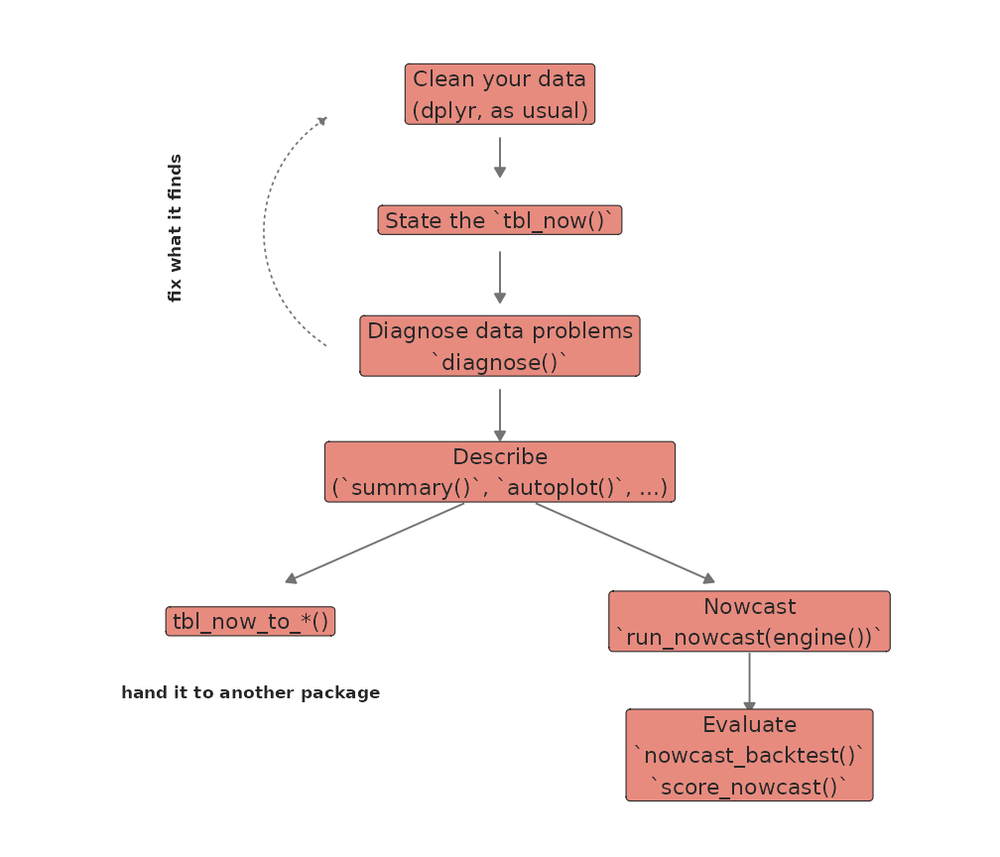
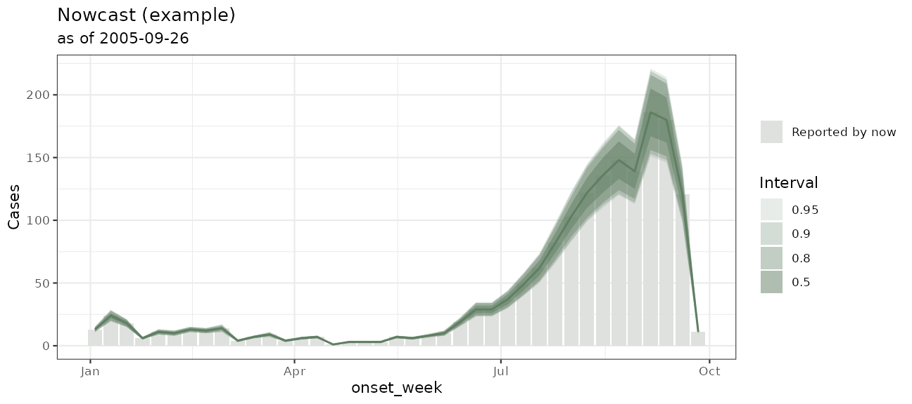

Why nowcasting needs a tbl.now
A case that happened yersterday is not necessarily in yesterday’s data report. It might have been reported today or tomorrow or weeks later. Until that happens, until it gets reported, the most recent estimates of every epidemic curve underestimate for no epidemiological reason. Nowcasting estimates what those recent dates look like by taking into account both the overall epidemic (epidemic process) and the delay distribution (reporting-delay process).
To do so, one needs to carry two time indices at once:
The
event_datedescribing when the event happened, andThe
report_datedescribing when it was reported.
Traditional tidyverse time-series classes (tsibble, timetk) assume a
single date (Wang et
al. 2020; Dancho and Vaughan 2023).
tbl.now is an extension of the tibble (Wickham et al. 2019; Wickham 2014) that is aware of
which columns represent the event date as well as the report date, the
units (days, weeks, etc), the type of data (linelist vs counts), the now
of the nowcast, as well as other important columns. The main advantage
of tbl.now is that, being a tibble, it can
work within any dplyr pipeline.
The nowcasting workflow
Everything in the package depends on the tbl.now object.
One has to declare it once and then everything follows:

This vignette follows the nowcasting workflow at speed. We provide
links and a deeper tutorial in each section. Our main goal here is for
you to understand what tbl.now is about and how we
implement the nowcasting workflow.
The data
For this tutorial, we will use denguedat, a weekly
dengue line-list that comes with the package:
The dataset is a linelist with onset_week representing
when symptoms appear, report_week, when they reached the
surveillance system, and the gender of each individual (one
individual = one line):
denguedat#> # A tibble: 52,987 × 3
#> onset_week report_week gender
#> <date> <date> <chr>
#> 1 1990-01-01 1990-01-01 Male
#> 2 1990-01-01 1990-01-01 Female
#> 3 1990-01-01 1990-01-01 Female
#> 4 1990-01-01 1990-01-08 Female
#> 5 1990-01-01 1990-01-08 Male
#> 6 1990-01-01 1990-01-15 Female
#> # ℹ 52,981 more rowsThe data has 20 years of dengue. For this analysis, we will focus on the 2005 season and assume we were just seeing data from that year and we are sitting at the first day of October 2005.
1. Create the tbl_now
To create a tbl_now one has to use the
tbl_now() function and specify which column is the event,
which is the report, and which columns are the strata (if
applicable):
#For this example, we filter the data to keep only those cases that happened
#on 2005 and were reported before October 2005
denguedat <- denguedat |>
filter(onset_week >= as.Date("2005-01-01") & report_week <= as.Date("2005-10-01"))
#We then create the tbl_now object
dengue <- denguedat |>
tbl_now(
event_date = onset_week,
report_date = report_week
)
#> ℹ Identified data as <linelist-data> where each observation is a test.
dengue
#> # A tibble: 1,652 × 6
#> # Data type: "linelist"
#> # Frequency: Event: `weeks` | Report: `weeks`
#> onset_week report_week gender .event_num .report_num .delay
#> <date> <date> <chr> <dbl> <dbl> <dbl>
#> [event_date] [report_date] [...] [...] [...] [...]
#> 1 2005-01-03 2005-01-17 Male 0 2 2
#> 2 2005-01-03 2005-01-10 Female 0 1 1
#> 3 2005-01-03 2005-01-10 Female 0 1 1
#> 4 2005-01-03 2005-01-10 Male 0 1 1
#> 5 2005-01-03 2005-01-10 Male 0 1 1
#> 6 2005-01-03 2005-01-10 Male 0 1 1
#> # ────────────────────────────────────────────────────────────────────────────────────────────────────────────────────────
#> # Now: 2005-09-26 | Event date: "onset_week" | Report date: "report_week"
#> # ────────────────────────────────────────────────────────────────────────────────────────────────────────────────────────
#> # ℹ 1,646 more rowstbl_now() tells you what it had to infer (data is a
linelist) on a weekly grid, that
now is the last report week in the data corresponding to
2005-09-26. In addition, it added the .delay,
.event_num and .report_num columns which is
used downstream for nowcasts.
This object is still a tibble. You can use filter(),
mutate(), rename(), etcetera and the object
keeps its attributes. See More
on the tbl_now object for the full list of
attributes and how each dplyr verb treats them.
2. Diagnose it
Before modelling anything, ask what is wrong with the data.
diagnose() creates a report to show you any potential
problems with the data (for example the strata size, the estimated
truncation, etc):
diagnose(dengue)
#> ── Diagnosis of a <tbl_now> ────────────────────────────────────────────────────────────────────────────────────────────
#> 2 notes, 13 passed, 6 skipped.
#>
#> Notes (2)
#> ℹ declarations/undeclared: 1 column "gender" is not declared as strata or covariates.
#> → Declare it with `strata = ` to model it separately, or let `to_count()` pool it away -- which is what the `tbl_now_to_()` converters do.
#> ℹ truncation/event_date: 3 event dates are younger than the 95th percentile of the delay, so their counts are still filling in; an estimated 50.6% of their eventual total has not arrived.
#> → This is right-truncation, and it is the reason to nowcast rather than a defect. Cut the series at "2005-09-05" to describe it instead.
#>
#> ✔ 13 passed: declarations/temporal_effects, missing/onset_week, missing/report_week, now/event_date, now/now_gap_event, now/now_gap_report, now/report_date, ordering/event_to_report, simultaneously missing/event and report dates, units/declared, units/delay, units/event_grid, and units/report_grid
#> ─ 6 skipped: duplicates/key, negatives/count, ordering/event_to_revision, ordering/report_to_revision, strata/pending, and strata/size
#>
#> ℹ 21 findings. Use `dplyr::filter()` or `tibble::as_tibble()` for the table.Deeper diagnostics are covered in Diagnosing
a tbl_now and Identifying
reporting batches.
3. Describe it
Summarise the data
The summary() function describes your data. It returns
the summaries for multiple data components:
summary(dengue)
#> ── Summary of a <tbl_now> ──────────────────────────────────────────────────────────────────────────────────────────────
#> 16 rows in 4 components.
#>
#> cases
#> n = dates on the grid; total = cases
#> quantity n total mean sd min q25 q50 q75 q90 max prop_zero
#> <chr> <int> <dbl> <dbl> <dbl> <dbl> <dbl> <dbl> <dbl> <dbl> <dbl> <dbl>
#> 1 per_event_date 39 1652 42.4 55.2 1 7 13 62 139 186 0
#> 2 per_report_date 38 1652 43.5 59.0 2 7 12 57 163 194 0
#>
#> zero_run
#> n = runs of consecutive zero dates; total = zero dates in those runs
#> quantity n total
#> <chr> <int> <dbl>
#> 1 event_date 0 0
#> 2 report_date 0 0
#>
#> coverage
#> n = cells, or distinct dates on a date row; total = cases
#> quantity n total value date_min date_max
#> <chr> <int> <dbl> <dbl> <date> <date>
#> 1 total_cases 137 1652 NA NA NA
#> 2 event_date 39 1652 NA 2005-01-03 2005-09-26
#> 3 report_date 38 1652 NA 2005-01-10 2005-09-26
#> 4 now NA NA NA 2005-09-26 2005-09-26
#> 5 unobserved_cells 0 NA NA NA NA
#> 6 max_delay NA NA 11 NA NA
#> 7 triangle_cells_observed 137 NA NA NA NA
#> 8 triangle_cells_possible 402 NA NA NA NA
#> 9 triangle_occupancy NA NA 0.341 NA NA
#> 10 now_gap_event NA NA 0 NA NA
#> ℹ 1 more row.
#>
#> delay
#> n = (event, report) cells; total = cases
#> quantity n total mean sd min q25 q50 q75 q90 max
#> <chr> <int> <dbl> <dbl> <dbl> <dbl> <dbl> <dbl> <dbl> <dbl> <dbl>
#> 1 event_to_report 137 1652 1.40 0.900 0 1 1 2 2 11
#>
#> ℹ Use `dplyr::filter()` or `tibble::as_tibble()` for the full schema.Here, among other things, we can see that half the cases are reported within a week of onset but the tail runs much longer. More information on summary is available in the diagnosing article
Visualize the data
The autoplot() function lays the object as a grid
showing how the epidemic and the delay processes behave:
autoplot(dengue)
Every panel is also a function of its own and there are additional
functions such as plot_reporting_triangle(),
plot_reporting_hexamap(), plot_delay_drift()
which you can use to better characterize your data. See them in the Diagnosing
a tbl_now vignette
4. Then: hand it over, or fit it here
Hand it over
If you already use another nowcasting package, tbl.now
probably speaks its dialect. The tbl_now_to_*() converters
go out, and tbl_now_from_*() (or as_tbl_now())
come back. For example one can transform the tbl.now to a
reporting triangle:
#Transform to a baselinenowcast reporting triangle
triangle <- tbl_now_to_baselinenowcast(dengue)
#This is now a reporting triangle:
triangle[(nrow(triangle) - 5):nrow(triangle), 1:7]
#> 0 1 2 3 4 5 6
#> 2005-08-22 5 88 51 4 0 0 NA
#> 2005-08-29 7 89 33 10 0 NA NA
#> 2005-09-05 13 111 58 4 NA NA NA
#> 2005-09-12 14 112 54 NA NA NA NA
#> 2005-09-19 14 107 NA NA NA NA NA
#> 2005-09-26 11 NA NA NA NA NA NAThat is now a reporting triangle: its rows are onset weeks, columns are reporting delays in weeks. It can then be used within the framework:
library(baselinenowcast)
#and nowcast within the framework
baselinenowcast(triangle)There are converters for epinowcast, EpiNow2, baselinenowcast, NobBS, surveillance,
epidist,
tsibble and data.table – see Nowcasting
with different models.
Or fit it here
The function run_nowcast() takes the object and an
engine(), and returns the same tbl_nowcast
result whichever engine you picked. There are engines for each of the
packages mentioned above (except for epidist). Here we will
use example_engine() – a deliberately simple nowcast that
runs very fast for examples. However we recommend chainging it in real
life for engine_baselinenowcast(),
engine_epinowcast(),
engine_diseasenowcasting() or another one.
#Change to engine_diseasenowcasting() if possible
fit <- run_nowcast(dengue, example_engine())
#Visualize the results
autoplot(fit)
The result prints the estimate, interval at the last event date it
covers. You can use tidy() to get a table of quantiles (or
as_tibble() for all predictions):
tidy(fit)#> # A tibble: 5 × 7
#> event_date stratum estimate conf.low conf.high level engine
#> <date> <chr> <dbl> <dbl> <dbl> <dbl> <chr>
#> 1 2005-08-29 all 139 113 165 0.95 example
#> 2 2005-09-05 all 186 151 221 0.95 example
#> 3 2005-09-12 all 180 146 214 0.95 example
#> 4 2005-09-19 all 121 98 144 0.95 example
#> 5 2005-09-26 all 11 9 13 0.95 example5. Evaluate your nowcast
The nowcast_backtest() function re-fits at a series of
past now dates (each time ignoring everything that had not
been reported by then) and scores the predictions against what
eventually arrived:
backtest <- nowcast_backtest(
dengue,
example_engine(),
now_dates = as.Date(c("2005-08-07", "2005-09-04")), #Evaluate at these two dates
verbose = FALSE
)
backtest
#> ── A <nowcast_backtest> ────────────────────────────────────────────────────────────────────────────────────────────────
#> • methods: "example"
#> • now dates: "2005-08-07" and "2005-09-04"
#> # A tibble: 1 × 4
#> .method mean_wis mean_ae_median coverage_90
#> <chr> <dbl> <dbl> <dbl>
#> 1 example 5.04 5.21 0.939We can see the metrics which include the weighted interval score (lower is better) and how often the 90% interval actually contained the truth.
6. And create ensembles
Several nowcasts can be combined into one with
nowcast_ensemble() which is in general a more robust model.
That is a topic of its own, and it has its own article: Ensemble
nowcasting.
Where to go next
That is the whole workflow. If you want to see it done on real, messy surveillance data from beginning to end, the tutorial is the place to start.
If you have any questions or comments regarding the contents of this article please open an issue on Github.
Learning more
- A tutorial on real life surveillance data. Takes you from cleaning to diagnosing errors in the data to nowcasting: https://rodrigozepeda.github.io/tbl.now/articles/example.html
- The second part of the tutorial with a revision process: the optional third date, where a reported case is later confirmed, retracted or left pending: https://rodrigozepeda.github.io/tbl.now/articles/example_revisions.html
- The Get started vignette: the whole workflow, from a raw line list to a scored nowcast, in five minutes: https://rodrigozepeda.github.io/tbl.now/articles/tbl.now.html.
-
More on the
tbl_nowobject: every attribute, the three data types, the revision process, temporal effects and thedplyrmethods: https://rodrigozepeda.github.io/tbl.now/articles/more-on-tbl-now.html - More thoughts on diagnosing your dataset with
tbl.nowhttps://rodrigozepeda.github.io/tbl.now/articles/diagnosing-a-tbl-now.html - Detecting reporting batches with
tbl.nowhttps://rodrigozepeda.github.io/tbl.now/articles/batches.html - How to use different nowcasting engines from
tbl.now: here you can learn how it connects to the other nowcasting packages. https://rodrigozepeda.github.io/tbl.now/articles/nowcasting-models.html - How to nowcast with multiple engines, backtest and ensemble nowcasts. https://rodrigozepeda.github.io/tbl.now/articles/ensemble-nowcasting.html
- Adding your own custom nowcasting model https://rodrigozepeda.github.io/tbl.now/articles/custom-nowcast-models.html
- Package reference: https://rodrigozepeda.github.io/tbl.now/reference/